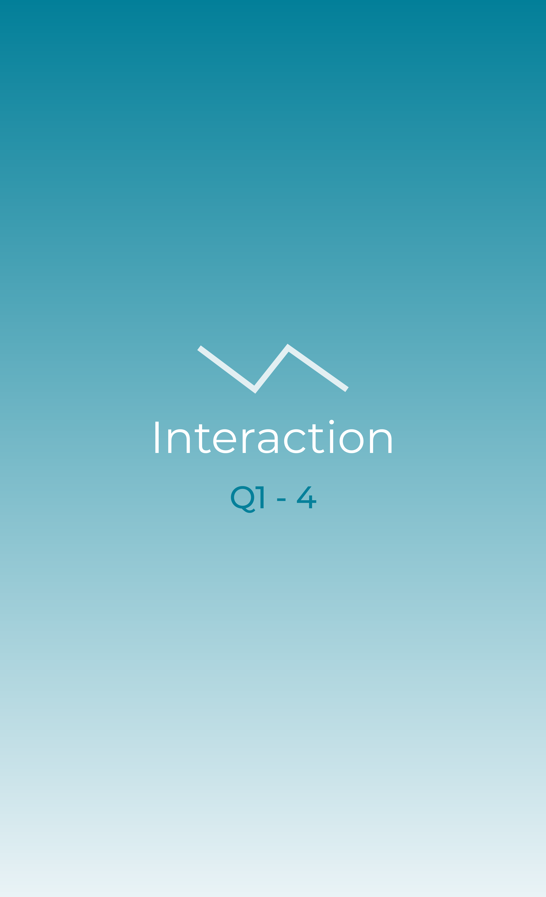

The first thing I noticed was the vibrant colors and art style of the website. But what impressed me most is that we can only interact when we reduce the browser size (on a PC or laptop); this website is designed for mobile devices. At first, I didn’t understand what to do with it but I was surprised when I finally figured out how to make the interactions work.
- Reduce the browser size (on a PC or a laptop)
- Resize multiple times to see the animation
- Click the Start button
- Read the description
- Click Next repeatedly
- Enter scenarios (Archipelago, Beach, City)
- Drag and move the screen to explore
- Click special elements to reveal quotes
- Hold the screen to hear real-life sounds
- Zoom into points
- Turn the wheel to move timeline
- Complete all scenarios
- Click “Discover Your Journey”
- Resize multiple times to see the animation
- Click the Start button
- Read the description
- Click Next repeatedly
- Enter scenarios (Archipelago, Beach, City)
- Drag and move the screen to explore
- Click special elements to reveal quotes
- Hold the screen to hear real-life sounds
- Zoom into points
- Turn the wheel to move timeline
- Complete all scenarios
- Click “Discover Your Journey”
I spent most of my time dragging and moving the screen to explore the interactive world.
Mine most common action in the two-minute interaction was turning the wheel to navigate through the timeline.